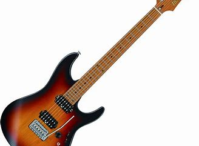

.png)
Guitar
It
Immerse yourself in the world of the guitar and let yourself be carried away by its melody and its wonders
Biography and history of the guitar
The guitar's rich history spans centuries and cultures, evolving from medieval Europe to modern times. Originating in Spain, it flourished with innovations like Antonio de Torres Jurado's contributions. Its journey influenced diverse styles like flamenco and bossa nova, captivating global audiences in blues clubs, concert halls, and gatherings worldwide..
Different type of guitar
.jpg)
The classical guitar, or Spanish guitar, is cherished by aficionados for its rich resonance. With a hollow body and six nylon strings, it offers ease of play and a softer touch. Traditionally finger-plucked, it's versatile in classical, Latin, and flamenco music, embodying timeless charm and adaptability without requiring amplification..
The acoustic guitar resembles the classical guitar but utilizes steel strings for a robust sound. It doesn't usually need amplification and is crafted with sturdy woods like spruce and mahogany. Versatile across folk, blues, country, and rock genres, its resonance captivates audiences, making it a staple in diverse musical styles..

.jpg)
The bass guitar, crucial for rhythm and harmony in many genres, boasts deep tones. With its longer neck and four strings, it anchors rock, jazz, and funk with lower pitches. Bassists employ fingerstyle or slap techniques, infusing songs with commanding presence and dynamic energy, propelling music forward with distinctive grooves..
The electric guitar, a marvel of modern music, depends on electronic amplification. Its solid body and pickups transform string vibrations into electric signals, controlled for volume and tone. Renowned for versatility, it spans genres from rock to blues, shaping music history with innovation and captivating global audiences with electrifying presence..
The folk guitar, steeped in cultural tradition, is celebrated for its versatility. Its hollow body and steel strings produce rich, resonant tones. Loved by beginners and pros alike for its expressive qualities, it complements blues, country, and folk music. From campfires to concert halls, it unites people with its universal language of melody and harmony, whether strummed rhythmically or fingerpicked intricately..
Some pieces of advice
First of all, here is the most important tip: WHEN TALKING ABOUT MUSIC, YOU HAVE TO USE EAR
1. You've got to have a guitar.
2. Explore different genres to broaden your musical horizons.
3.
You must love the guitar.
4. Experiment with various techniques like fingerstyle, picking, and
strumming.
5. Always enjoy playing it.
6. Focus on developing a good sense of rhythm and
timing.
7. Always have the urge to learn new songs and theories.
8. Record yourself playing to
track your progress and identify areas for improvement.
9. Practice at least 1 hour a day.
10.
Invest in quality equipment and maintain your guitar regularly.
11. Take clue and advice from the
pro
guitarists you know.
12. Attend live performances and concerts to get inspired and learn from other
musicians.
13. Go to studios with friends and share with each other what each of you knows.
14.
Join a band or ensemble to experience the joy of playing music with others.
15. Stay patient and
persistent, as mastering the guitar takes time and dedication.
Some accessories for guitar
.jpg)
A mediator, also known as a pick, is a small tool used to pluck or strum the strings of a guitar, providing a sharper attack and different tone compared to fingerpicking.
.jpg)
A capodastre, or capo, is a device used on the neck of a guitar to shorten the playable length of the strings, allowing the player to change the pitch of the instrument without altering the tuning.
.jpg)
A tuner, is a device used to adjust the pitch of the strings on a guitar to their proper frequencies. It ensures accurate tuning for optimal sound quality and performance.
.jpg)
A metronome is a device that produces regular, audible ticks or beats at a consistent tempo. It helps musicians maintain timing and rhythm during practice and performance.